무선설비산업기사 (2015-10-04 기출문제)
1과목: 디지털 전자회로
1. 다음 중 직렬형 정전압 회로의 특징으로 틀린 것은?
- 부하저항이 클 때 효율은 병렬형에 비교하여 높다.
- 출력전압의 넓은 범위에서 쉽게 설계될 수 있다.
- 증폭단을 증가시킴으로써 출력저항 및 전압 안정 계수를 작게 할 수 있다.
- 출력단자가 단락되더라도 트랜지스터가 파괴되는 경우는 없다.
(정답률: 82%)

2. 다음 중 정류회로에서 리플 함유율을 감소시키는 방법으로 적합하지 않은 것은?
- 입력전원의 주파수를 낮게 한다.
- 반파정류회로보다 전파정류회로를 사용한다.
- 콘덴서입력형 평활회로에서 콘덴서 용량을 크게 한다.
- 초크입력형 평활회로에서 초크의 인덕턴스를 크게 한다.
(정답률: 76%)
3. 다음은 회로의 4단자망을 h 파라미터로 나타 낸것이다. 입력개방 역방향 전압비는? (여기서 입력단은 1이고, 출력단은 2로 표시한 것이다.)
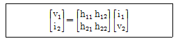
- h11
- h12
- h21
- h22
(정답률: 77%)
4. 다음 중 가장 효율이 좋은 증폭방식은?
- A급
- B급
- C급
- AB급
(정답률: 90%)
5. 전압증폭도(AV)가 5,000인 증폭기에 부궤환을 걸어 증폭기 이득(Af)이 800일 경우 궤환율은 얼마인가?
- 0.001⑤[%]
- 0.01⑤[%]
- 0.1⑤[%]
- 1.⑤[%]
(정답률: 66%)
6. 다음 회로의 설명으로 틀린 것은? (단, hfe1=Q1의 순방향 전류 증폭률, hfe2=Q2의 순방향 전류 증폭률)
- 트랜지스터 Q1과 Q2는 Darlington 접속이다.
- 전류증폭률은 (h+hhe1)(1+h2)이다.
- 입력저항은 대단히 높고 출력저항은 낮다.
- 전압이득이 1보다 크다.
(정답률: 76%)
7. 수정 발진기는 어떤 현상을 이용하는가?
- 피에조(Piezo) 현상
- 과도(Transent) 현상
- 지연(Delay) 현상
- 히스테리시스(Hysteresis) 현상
(정답률: 86%)
8. 반송파 전력이 60[kW]인 경우 92[%]로 진폭 변조하였을 때 피변조파 전력은 약 얼마인가?
- 85.4[kW]
- 93.5[kW]
- 122.8[kW]
- 145.2[kW]
(정답률: 73%)
9. 다음 중 LC 병렬 공진 회로에서 공진주파수[Hz]를 구하는 식은?
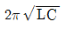
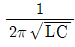
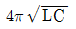
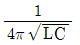
(정답률: 87%)
10. 다음 설명에 적합한 회로는?
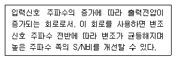
- FM변조회로
- 전치보상기
- AM변조회로
- 프리엠파시스
(정답률: 79%)
11. 다음 중 플립플롭(Flip-Flop)과 같은 동작하는 회로는?
- LC 발진기
- 수정 발진기
- 쌍안정 멀티바이브레이터
- 단안정 멀티바이브레이터
(정답률: 82%)
12. 다음 중 슈미트 트리거 회로를 사용하여 변환할 수 없는 파형은?
- 정현파를 구형파로 변환
- 삼각파를 구형파로 변환
- 삼각파를 펄스파로 변환
- 구형파를 정현파로 변환
(정답률: 79%)
13. 10진수 3의 BCD코드와 4의 BCD코드를 더한 3초과로 맞는 것은?
- 0111
- 1010
- 1011
- 0110
(정답률: 71%)
14. 다음 중 가중치 코드(Weighted Code)의 종류가 아닌 것은?
- 8421 코드
- 2421 코드
- 그레이 코드(Gray Code)
- 링카운터(Ring Counter) 코드
(정답률: 77%)
15. 다음 논리식을 간략화한 것으로 옳은 것은?
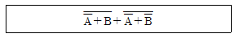
- A+B
- AB
- A
- B
(정답률: 86%)
16. TTL 게이트에서 스위칭 속도를 높이기 위해 사용되는 다이오드는?
- 바랙터 다이오드
- 제너 다이오드
- 쇼트키 다이오드
- 정류 다이오드
(정답률: 76%)
17. 다음 디지털 IC의 종류 중 Fan-Out이 큰 순서로 옳은 것은?
- TTL > TRL > DTL > C-MOS
- C-MOS > TTL > RTL > DTL
- TTL > C-MOS > RTL > DTL
- C-MOS > TTL > DTL > RTL
(정답률: 72%)
18. 다음 중 링 카운터와 존슨 카운터의 구성상 차이점은 무엇인가?
- 구성상의 차이점이 없다.
- 최종 출력에서 초단 입력으로 궤환시킬 때 Q 또는
 공급 방법이 다르다.
공급 방법이 다르다. - 두개의 카운터 모두 클럭 신호를 Inverting 시킨다.
- 두개의 카운터 모두 각 단마다 Q와
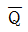
를 교차하면서 다음 단 카운터에 공급한다.
(정답률: 78%)
19. D 플립플롭을 이용하여 26진 상향 비동기식 계수기를 설계하려고 한다. D 플립플롭은 최소 몇 개가 필요한가?
- 26개
- 13개
- 7개
- 5개
(정답률: 70%)
20. 다음 중 멀티플렉서 표시기호로 옳은 것은?
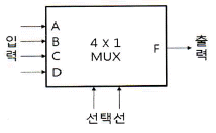
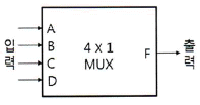
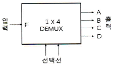
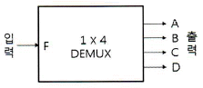
(정답률: 85%)
2과목: 무선통신 기기
21. 다음은 FM 송신기 블록도의 일부이다. 3체배 한 후 최대주파수편이가 ±6[pkHz]이면, FM 변조 후 3체배하기 전의 최대 주파수 편이[Δf]는 얼마인가?
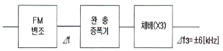
- Δf = ±1[kHz]
- Δf = ±2[kHz]
- Δf = ±6[kHz]
- Δf = ±12[kHz]
(정답률: 88%)
22. 다음 중 디지털 정보 신호를 무선 아날로그 전송로를 이용하여 전송할 때 이용하는 변조 기술은?
- ASK
- PCM
- JPEC
- MPEC
(정답률: 73%)
23. 다음 중 AM 송수신기에서 과변조가 발생하면 어떤 현상이 일어나는가?
- 잡음이 줄어든다.
- 주파수가 안정된다.
- 변조도가 100% 보다 낮다.
- 점유주파수대역이 넓어진다.
(정답률: 70%)
24. 다음 중 SSB 무선송신기의 장점에 대한 설명으로 틀린 것은?
- 점유주파수대폭이 넓어진다.
- 소비전력이 적다.
- 선택성페이딩의 영향이 적다.
- S/N비가 개선된다.
(정답률: 68%)
25. 중간주파수가 500[kHz]인 슈퍼헤테로다인 수신기에서 희망파 1,000[kHz]에 대한 영상주파수는 얼마인가?
- 1,500[kHz]
- 2,000[kHz]
- 2,200[kHz]
- 3,200[kHz]
(정답률: 84%)
26. 코드분할 다원 접속에서 최대 전송률을 증가시키기 위해서는 무엇일 해야 하나?
- 신호 전력 또는 주파수 대역폭을 증가시켜야 한다.
- 신호 전력 또는 주파수 대역폭을 감소시켜야 한다.
- 신호 전력을 감소시키고 주파수 대역폭을 증가시켜야 한다.
- 신호 전력을 증가시키고 주파수 대역폭을 감소시켜야 한다.
(정답률: 66%)
27. 다음중 극지방 상공에 위성을 띄워 자원 탐사 및 기상 관측용 위성으로 사용하는 것은?
- 정지궤도 위성
- 저궤도 위성
- 랜덤 위성
- 위상 위성
(정답률: 67%)
28. 다음 중 위성통신의 장점이 아닌 것은?
- 동보통신이 가능하다.
- 전송 손실 및 지연이 없다.
- 광역성 통신이 가능하다.
- 고속 대용량 통신이 가능하다.
(정답률: 81%)
29. 다음 중 TDM 통신방식을 FDM 통신방식과 비교한 설명으로 틀린 것은?
- TDM이 FDM보다 회로 구성이 간단해진다.
- TDM이 FDM보다 누화(Cross Talk)의 영향을 더 받는다.
- TDM은 시간적 동기를 유지하는 것이 필수적이다.
- 페이딩(Fading)이 있는 전송매체일 때는 FDM보다 TDM이 유리하다.
(정답률: 60%)
30. 다음 중 EV-DO(Evolution-Data Only) 시스템에 적용되는 변조 방식이 아닌 것은?
- QPSK
- ASK
- 8PSK
- 16QAM
(정답률: 73%)
31. 다음 중 전파가 전리층에 들어갔을 때 일어나는 현상이 아닌 것은?
- 전파의 굴절
- 감쇠작용
- 편파면의 회절
- 라디오 덕트(Radio Duct) 현상
(정답률: 73%)
32. 다음 중 태양광 발전시스템에 대한 설명으로 틀린 것은?
- 태양의 빛 에너지를 변화시켜 전기를 생산하는 발전기술
- 태양광을 받아서 직류 전력을 발생하는 태양전지를 이용한 방식
- 태양전지로 구성된 모듈과 축전지 및 전력변환장치로 구성
- 태양전지의 내부는 니켈카드뮴 성분
(정답률: 78%)
33. 다음 중 축전지 특성에 대한 설명으로 옳은 것은?
- 격리판은 유리섬유, 에보나이트 및 알루미늄 등을 사용한다.
- 축전지의 음극판수는 양극판보다 2개 많다.
- 1개의 기준 전압은 5[V]이다.
- 축전지는 2차 전지이므로 재생 사용이 가능하다.
(정답률: 73%)
34. 다음 중 축전지의 AH(암페어시)가 의미하는 것은?
- 사용가능 시간
- 충전전류
- 축전지의 용량
- 최대 사용 전류
(정답률: 87%)
35. 무선 송신기의 신호대잡음비(S/N) 측정시 필요하지 않는 측정기는?
- 변조도계
- 오실로스코프
- 직선 검파기
- 저주파 발진기
(정답률: 86%)
36. 다음 중 전송선로상에서의 등가 임피던스와 등가 어드미턴스의 비를 의미하는 것은 무엇인가?
- 특성 임피던스
- 정재파비
- 실효 임피던스
- 전계강도
(정답률: 79%)
37. 수신기의 종합 특성을 결정하는 파라미터로서 혼신 및 간섭 등을 어느 정도까지 분리 및 제거할 수 있는 능력을 나타내는 것은 무엇인가?
- 감도
- 선택도
- 충실도
- 안정도
(정답률: 83%)
38. 다음 회로에서 입력 Vi는 교류 실효전압 100[V]라고 할 때 다이오드 D1에 걸리는 최대 역전압(PIV)은 약 얼마인가?
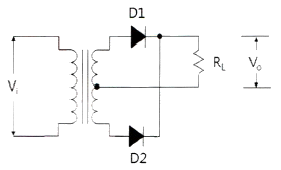
- 100[V]
- 141.4[V]
- 200[V]
- 282.8[V]
(정답률: 60%)
39. 다음 중 시외전화망과 같은 곳에서 사용하는 무급전 중계 방식에서 전파손실을 경감시키기 위한 방법으로 맞지 않는 것은?
- 중계구간을 짧게 한다.
- 반사판을 직각에 가깝게 한다.
- 반사판을 크게 한다.
- 송수신 안테나 거리를 길게 한다.
(정답률: 70%)
40. 특성임피던스(Zo)가 75[Ω]인 선로 종단에 신호를 인가한 후 선로상의 파형을 측정한 결과 최고전압이 25[V], 최저전압이 5[V]일 경우, 이 선로의 전압정재파비(VSWR)는?
- 4
- 5
- 6
- 8
(정답률: 79%)
3과목: 안테나 개론
41. 동축케이블에서 비유전율이 2.3인 폴리스틸렌을 매질로 사용하는 경우에 특성 임피던스는 약 얼마인가? (단, 동축케이블의 손실이 최소가 되는 조건으로 D/2=3.6이 되는 조건)
- 35[Ω]
- 50[Ω]
- 75[Ω]
- 100[Ω]
(정답률: 72%)
42. 다음 중 전파에 대한 설명으로 옳은 것은?
- 전계와 자계가 X축 방향의 성분만 있는 경우를 말한다.
- 전파의 진행방향에는 전계와 자계가 없고 진행방향의 직각 방향에는 전계와 자계가 존재한다.
- 전계와 자계는 X, Y, Z축 전체에 모두 존재한다.
- 전계는 Z축, 자계는 Y축에 존재하는 파를 말한다.
(정답률: 85%)
43. 다음 중 파동의 전파속도에 대한 설명으로 옳은 것은?
- 진동수가 낮을수록 증가한다.
- 파장이 짧을수록 감소한다.
- 언제나 일정하다.
- 매질에 따라 속도가 변하는 것은 파장 때문이다.
(정답률: 74%)
44. 다음 중 급전선로의 정재파비를 낮게 하는 이유로 가장 적합한 것은?
- 스퓨리어스 방출을 감소시키기 위해
- 저온에서 급전선로를 가열하기 위해
- 인접 무선기기와의 혼신을 줄이기 위해
- 보다 효과적인 전자파 에너지의 전달을 위해
(정답률: 77%)
45. 특성임피던스가 270[Ω]인 무손실 선로에 흐르는 고주파 전류의 최대값이 0.5[A]이고 최소 전류값이 0.1[A]라 할 때 이 선로에 전송되고 있는 전력은 얼마인가?
- 10.8[W]
- 27[W]
- 67.5[W]
- 13.5[W]
(정답률: 51%)
46. 다음 중 마이크로파의 전송에 사용되는 도파관의 특성으로 틀린 것은?
- 저항손실이 적다.
- 복사손실이 거의 없다.
- 유전체 손실이 적다.
- 저역 여파기(LPF)로 작용한다.
(정답률: 76%)
47. 다음 중 도파관과 동축 케이블을 연결할 때 사용되는 결합방식은?
- 작은 루프에 의한 결합
- 횡전자계에 의한 결합
- 도파과 창에 의한 결합
- 공동 공진기에 의한 결합
(정답률: 75%)
48. 다음 중 급전선에 대한 설명으로 옳은 것은?
- 전송 효율이 좋고 정합이 용이해야 한다.
- 특성임피던스는 길이와 관계가 있다.
- 감쇠정수가 커야 된다.
- 무왜곡 조건은 RG=CL로 정의된다.
(정답률: 85%)
49. 중파 방송국의 안테나 전력을 10[kW]에서 250[kW]로 증가시키면 동일 지점에서 전계 강도는 몇 배가 되는가?
- 25배
- 5배
- 0.25배
- 0.04배
(정답률: 65%)
50. 안테나의 길이가 L일 때, 반파장 다이폴 안테나의 고유파장은?
- L/2
- L
- 2L
- 4L
(정답률: 62%)
51. 다음 중 안테나의 실효고에 대한 설명으로 틀린 것은?
- 실효고가 클수록 복사되는 전파의 강도는 크다.
- 실효고가 클수록 유기되는 수신 개방 전압은 크다.
- 반파장 다이폴의 안테나의 길이는 실효고보다 작다.
- λ/4 접지 안테나의 실효고는 반파장 다이폴의 1/2이다.
(정답률: 54%)
52. 다음 중 안테나의 특성과 거리가 먼 것은?
- 편파
- 복사각
- 전후방비
- 영상주파수
(정답률: 84%)
53. 다음 중 안테나의 가상접지 방식에 대한 설명으로 틀린 것은?
- 도체망을 대지와 절연시켜 설치한다.
- 도전율이 적은 지역, 건조지대 등에 설치한다.
- 깊이 매설된다.
- 카운터포이즈(Counterpoise)라고도 한다.
(정답률: 80%)
54. 루프 안테나와 고니오미터를 접속시켜 전파의 방향을 탐지할 수 있는 안테나는?
- 애드콕(Adcock) 안테나
- 베르니토시(Bellini-Tosi) 안테나
- 슬리브(Sleeve) 안테나
- 비버리지(Beverage) 안테나
(정답률: 68%)
55. 다음 중 델리저 현상에 대한 설명으로 틀린 것은?
- 명확한 주기성은 없으나 보통 27일과 54일을 발생주기로 인정하고 있다.
- 야간에 고위도 지방에서 발생한다.
- 돌발적으로 발생하여 10분 또는 수 십분 계속되다가 고위도 지방부터 차차 회복된다.
- 단파통신에 영향을 주며 낮은 주파수 쪽이 영향을 많이 받는다.
(정답률: 73%)
56. 다음 중 전리층 반사를 사용하는 주파수대에서 최고 사용주파수(MUF)를 구하는 목적으로 맞는 것은?
- 전리층 반사파를 사용하여 통신하기 적합한 주파수를 구하는데 사용한다.
- 전리층의 밀도를 구하는데 사용한다.
- 전리층 반사파를 사용하는 경우의 전계강도를 구하는데 사용한다.
- 전리층 반사파가 도달되는 최고의 거리를 구하는데 사용한다.
(정답률: 73%)
57. 다음 중 VHF대 이상의 전파가 초가시거리까지 전파되는 것과 관련이 없는 것은?
- 대류권 산란파
- 산재 F층 반사파
- 라디오 덕트(Radio Duct)
- 전리층 산란파
(정답률: 63%)
58. 다음 중 등가지구 반경계수(K)에 대한 설명으로 틀린 것은?
- 대기의 수직면 내에서의 굴절률 분포를 알 수 있다.
- 보통은 1보다 크지만 작은 경우도 있다.
- 열대지방의 K값이 한대지방보다 크다.
- K값이 1에 가까울수록 굴절이 심하다는 뜻이다.
(정답률: 77%)
59. 프레즈넬 존(Fresnel zone)이 발생하는 이유는?
- 대지반사와 지표파의 간섭
- 대류권파와 전리층파의 간섭
- 반사파와 직접파의 간섭
- 직접파와 회절파의 간섭
(정답률: 75%)
60. 전리층의 높이를 측정하기 위해 지상에서 임펄스파를 상공으로 발사한 후 0.001[초] 후에 반사파를 수신하였을 경우 반사층의 높이는 얼마인가?
- 250[km]
- 200[km]
- 150[km]
- 100[km]
(정답률: 71%)
4과목: 전자계산기 일반 및 무선설비기준
61. 다음 중 입출력 겸용장치에 해당하지 않는 것은?
- 자기디스크
- 플로피디스크
- OCR(Optical Character Reader)
- 자기테이프
(정답률: 85%)
62. 다음 중 운영체제에 대한 설명으로 틀린 것은?
- 시스템의 응답시간과 반환시간을 단축하는 것이 목적이다.
- 시스템 자원의 효율적인 운영과 자원에 대한 스케줄링 기능을 수행한다.
- 운영체제는 시스템 소프트웨어의 일종이라 할 수 있다.
- 운영체제는 시스템 명령이기 때문에 사용자와 직접 상호작용을 할 수는 없다.
(정답률: 86%)
63. 다음 중 인터럽트에 대한 설명으로 틀린 것은?
- 인터럽트 발생 시에 복귀주소는 스택(Stack)에 저장된다.
- 스택에 저장되는 값은 PC(Program Counter) 값이다.
- 스택에서 값을 가져오는 것을 푸쉬(Push)라고 부른다.
- 인터럽트 서비스 루틴(ISR)의 마직막 명령어는 리턴(Return)이다.
(정답률: 79%)
64. 10진수 10에 대해 2진법, 8진법 및 16진법의 표현으로 옳은 것은?
- 1001, 10, 10
- 1001, 11, A
- 1010, 12, A
- 1010, 12, B
(정답률: 87%)
65. 다음 중 고급언어로 쓰여진 프로그램을 컴퓨터에서 수행될 수 있는 저급의 기계어로 번역하는 것은?
- C 언어
- 포트란
- 컴파일러
- 링커
(정답률: 84%)
66. 다음 중 컴파일러와 인터프리터에 대한 비교 설명으로 틀린 것은?
- 컴파일러는 목적 프로그램을 생성하고, 인터프리터는 생성하지 않는다.
- 컴파일러는 전체 프로그램을 한꺼번에 처리하고, 인터프리터는 대화식인 행 단위로 처리한다.
- 일반적으로 컴파일러 방식은 실행속도가 느리고, 인터프리터 방식은 빠르다.
- 인터프리터는 BASIC, LISP 등이 있고, 컴파일러는 COBOL, C, C# 등이 있다.
(정답률: 83%)
67. 검색 방법 중 키 값으로부터 레코드가 저장되어 있는 주소를 직접 계산하여 산출된 주소로 바로 접근하는 방법으로 키-주소 변환 방법이라고도 하는 것은?
- 이진 검색
- 피보나치 검색
- 해싱 방법
- 블록 검색
(정답률: 81%)
68. 입출력 주소지정방식에 있어 메모리 주소와 입출력 주소가 단일 주소 공간으로 구성되어 주소관리는 용이하나, 메모리 주소공간이 입출력 주소공간에 의해 축소되는 단점을 갖는 주소지정방식은 무엇인가?
- Programmed I/O
- Interrrup I/O
- Memory-Mapped I/O
- I/O-Mapped I/O
(정답률: 80%)
69. 다음 중 펌웨어에 대한 설명으로 옳은 것은?
- 소프트웨어와 하드웨어의 특성을 가지고 있다.
- 하드웨어의 교체없이 소프트웨어 업그레이드만으로는 시스템 성능을 개선할 수 없다.
- RAM에 저장되는 마이크로컴퓨터 프로그램이다.
- 시스템 소프트웨어로서 응용 소프트웨어를 관리하는 것이다.
(정답률: 82%)
70. 다음 중 산술연산과 논리연산 동작의 결과로 축적되는 레지스터는?
- RAM
- 상태(Status) 레지스터
- ROM
- 인덱스 레지스터
(정답률: 69%)
71. 다음 중 감리사의 주요 임무 및 책임사항으로 맞는 것은?
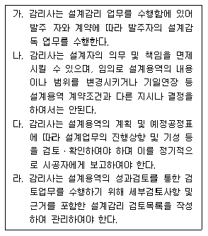
- 가, 다
- 가, 다, 라
- 가, 나, 다, 라
- 가, 라
(정답률: 51%)
72. 다음 정의를 가리키는 용어는?
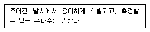
- 지정주파수
- 기준주파수
- 특성주파수
- 분배주파수
(정답률: 74%)
73. 비상국 전원의 조건 중 축전지를 사용하는 경우 상시 몇 시간 이상 운용할 수 있어야 하는가?
- 8시간
- 12시간
- 16시간
- 24시간
(정답률: 86%)
74. 다음 중 방송통신기자재 등의 적합인증 신청 시 구비서류가 아닌 것은?
- 사용자 설명서
- 외관도
- 회로도
- 주요부품명세서
(정답률: 85%)
75. 다음 중 무선설비 기성부분검사와 준공검사에 대한 설명으로 틀린 것은?
- 공사현장에 주요공사가 완료되고 현장이 정리단계에 있을 때에는 준공 2개월 전에 준공기한 내 준공 가능여부 및 미진사항의 사전 보완을 위해 예비 준공검사를 실시하여야 한다.
- 감리사는 시공자로부터 시험운영계획서를 제출받아 검토ㆍ확정하여 시험운용 20일 전까지 발주자 및 시공자에게 통보하여야 한다.
- 감리업자 대표자는 기성부분검사원 또는 준공계를 접수하였을 때는 30일 안에 소속 감리사 중 특급감리사급 이상의 자를 검사자로 임명하고, 이 사실을 즉시 본인과 발주자에게 통보하여야 한다.
- 예비준공검사는 감리사가 확인한 정산설계도서 등에 의거 검사하여야 하며, 그 검사 내용은 준공검사에 준하여 철저히 시행하여야 한다.
(정답률: 80%)
76. 다음 중 무선국을 고시하는 경우 고시하는 사항이 아닌 것은?
- 무선국의 명칭 및 종별과 무선설비의 설치장소
- 무선설비의 발주자의 성명 또는 명칭
- 허가 년ㆍ월ㆍ일 및 허가번호
- 주파수, 전파의 형식, 점유주파수대폭 및 공중선전력
(정답률: 80%)
77. 전력선통신설비 및 유도식통신설비에서 발사되는 고조파ㆍ저조파 또는 기생발사강도는 기본파에대하여 몇 [dB] 이하이어야 하는가?
- 20[dB]
- 30[dB]
- 40[dB]
- 50[dB]
(정답률: 50%)
78. 다음 문장의 괄호안에 들어 갈 내용으로 적합한 것은?
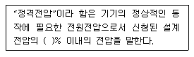
- ±2
- ±4
- ±6
- ±8
(정답률: 85%)
79. 지상파 디지털 텔레비전방송용 무선설비의 기술기준 중 변조된 신호의 채널당 주파수 대역폭은?
- 3[MHz]
- 6[MHz]
- 9[MHz]
- 12[MHz]
(정답률: 67%)
80. 다음 중 “지정시험기관 적합등록” 대상기자재가 아닌 것은?
- 자동차 및 불꽃점화 엔진구동기기류
- 가정용 전자기기 및 전동기기류
- 고전압설비 및 그 부속기기류
- 정보기기의 전원 및 공중선기기류
(정답률: 60%)
직렬형 정전압 회로는 출력단자가 단락되더라도 트랜지스터가 파괴되지 않는다는 특징이 있다. 이는 출력단자가 단락되면 전류가 흐르지 않아 트랜지스터 내부의 발열이 줄어들기 때문이다. 따라서 이 회로는 출력단자의 단락에 대한 안정성이 높다는 장점이 있다.